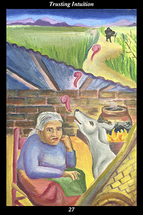

 | IMAGEWithin her home, a female warrior listens closely to her dog barking excitedly at an approaching figure. Approaching her house from the wilderness, the shadowy figure of a man walks with a cane, bent over from the weight of what he carries on his back. |